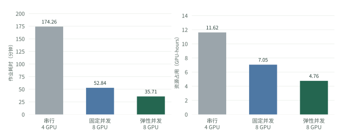
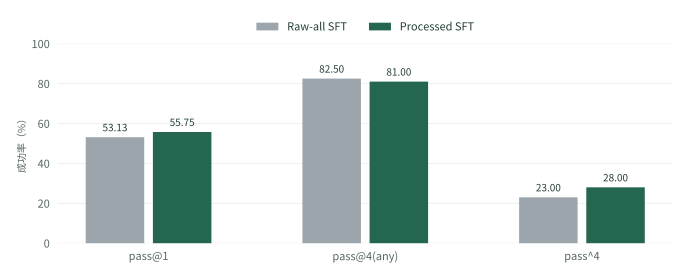
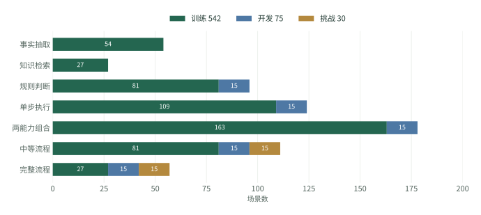
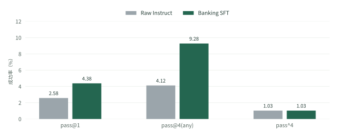
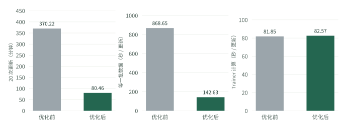
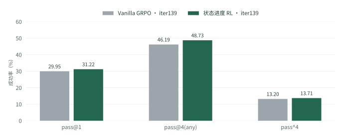
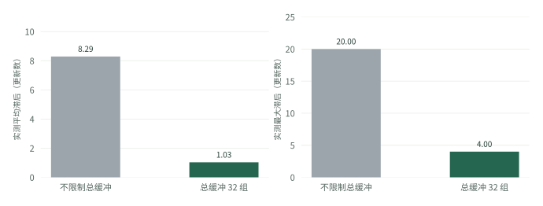
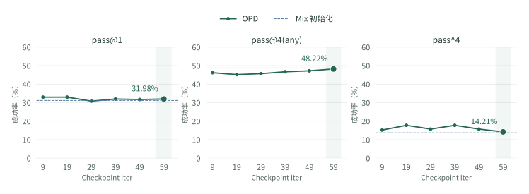
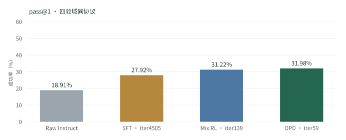
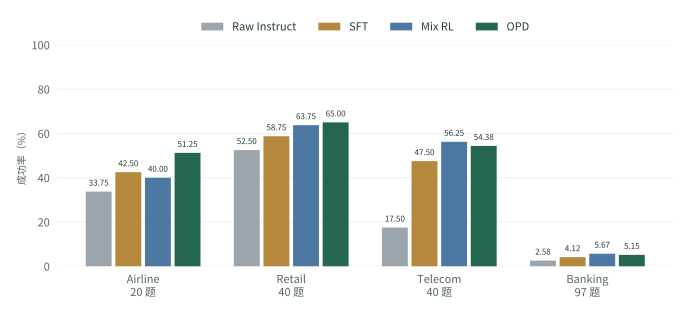

目标是完成业务，不只生成回复
客服 Agent 每次回复都可能影响后续操作。查错一条记录、改错一个字段，或没有让用户完成手机端设置，都可能使整条任务失败。
评测中有三个参与方：Agent 读取业务规则并调用客服工具；User 模型扮演客户，提出需求并完成用户侧操作；环境执行工具，保存订单、账户或设备状态。任务结束后，官方评分器检查该任务要求的数据库状态、环境条件、动作或沟通内容。
客户只想处理订单中的空气净化器，订单还包含音箱和手机。一条失败轨迹调用了“取消整单”，工具执行成功，但取消范围不符合需求。另一条轨迹在客户确认后，只替换了指定商品，并把差价退到礼品卡。
失败：工具能执行，业务做错了
整张订单变成 cancelled，后续也不能再修改这件商品。最终数据库与目标状态不一致，reward = 0。
成功：状态变化符合本次需求
只更换空气净化器，保留其他商品，完成差价退款。数据库匹配，reward = 1。
来自相同任务的两次真实试验，用户的后续表达也不同；用于解释任务判分，不作为单变量对照。轨迹依据
一条模型主线，六项具体工作
起点是已有指令模型 Qwen3-4B-Instruct-2507。这里的 Raw 指“尚未经过本项目训练”，不是预训练基座。先用整理后的示范做 SFT，再在四领域任务中做强化学习，最后让 Airline 专家补充混合模型的不足。
已有指令模型
尚未进行项目训练
30,376 + 5,672 行
四领域监督数据
2,524 个任务
状态进度信用分配
Airline 专家 + Mix
按领域提供监督
Airline expert iter29 从同一个 SFT4505 单独训练，是 OPD 的另一位固定教师。训练时使用两个教师，评测和实际推理只使用最终的一个 4B 学生模型。
多轨迹共享 Agent/User 推理服务，已完成领域释放并发名额。
对齐工具归属、真实返回、监督目标与运行时协议。
构造可执行、可判分的新场景，再采集完整示范。
持续采样、按完整组入训，让采样与参数更新重叠。
根据环境状态离目标的远近，给 Assistant 每一轮反馈。
在学生自己生成的对话上，获得相应教师的逐 token 监督。
基于 slime / Megatron-LM / Ray / SGLang 实现。项目资料沿用 tau3-benchmark 名称，历史代码目录仍为 tau2-bench，Banking 注册名为 banking_knowledge。
让多条对话交错使用推理服务
原入口逐领域执行，域内一次只推进一条轨迹。Agent 生成完后要等 User，User 回复后又要等 Agent，模型服务有不少空闲时间。一次三领域评测包含 100 个任务、每题 4 次试验，串行作业耗时接近三小时。
我保留单条对话内的先后顺序，让不同任务的轨迹并发推进：轨迹 A 等 User 时，轨迹 B 可以请求 Agent。每条轨迹保存自己的消息历史和环境状态，所有轨迹共享 Agent 和 User 推理池。
根据实际等待，调整资源分配
第一版固定并发已经缩短了时间，但部分 Agent 副本几乎没有请求，User 却占用了更多等待时间。我把资源调整为 2 个 Agent 副本与 3 个 User 副本，并让 User 请求轮流分发。对于结束较晚的领域，再把已完成领域的并发名额转给它。
历史三领域运行的并发名额从 2 / 2 / 5 变为 0 / 3 / 6，最后是 0 / 0 / 9。它在一个领域完全结束后重新分配，不预测每条轨迹还要运行多久。



这组测速使用历史协议，当时的 User 工具解析不匹配，后来才修复。因此 4.88× 仅描述这组旧配置的整体速度变化。最终模型成绩采用修复后的四领域原生协议，不能用该测速同时证明当前协议的速度和模型质量。
实现位置与评测过程
run_eval.sh 启动模型副本和请求路由；run_eval.py 为领域创建独立进程；Tau2 runner 在各领域内并发执行 task/trial。每条轨迹结束后保存官方 reward 和完整交互记录，再汇总成功率与请求计时。
核心改动是执行调度、服务布局和计时。最终结果仍由官方任务评分器判断。早期测速与当前四领域协议分别保留，便于检查计算范围。
让示范中的信息、工具和监督目标对得上
AReaL 提供了 Airline、Retail、Telecom 的开源示范。但一行数据只包含“之前的上下文 + 当前 Assistant 输出”，不能直接当成一条独立对话。源数据有 33,531 行，来自 2,499 段对话，其中还包含失败与标签冲突的对话。
除了任务结果，输入结构也会影响学习。用户手机侧工具不应变成客服可调用的工具；后续动作不能提前看到尚未发生的工具返回；同一段历史也不应随每个训练行反复计入 loss。我把处理重点放在这些运行时会遇到的具体问题上。
| 问题 | 最终采用的处理 |
|---|---|
| 失败或冲突标签混入正向示范 | 按完整对话检查 correct 与 reward，仅保留两者均为 1 的候选。 |
| Agent 与 User 的工具权限混用 | 换成原生 Agent 提示与工具 schema；隐藏用户侧调用及返回，保留用户正常报告的信息。 |
| 一次输出包含多个工具调用 | 按源顺序拆成原子 target，并为后续调用配入前一调用的真实返回。 |
| 历史 Assistant 被反复监督 | 每行只训练最后一个 Assistant target，历史、User 与工具返回均设为 loss mask 0。 |
| 上下文超过训练容量 | 按最终模板计算长度，超过 16,384 tokens 的整行删除；保留行不截断。 |
源输出包含“查询订单 → 修改订单”两个调用时，第二个动作必须看到第一个动作的真实返回。拆分后仍学习两个动作，只是分别提供正确的上下文。
缺少真实返回时，不自行补造 observation。多工具调用本身也不等于低质量；处理依据是执行顺序、可见信息和训练格式。
通过重训比较处理配方
对照组 Raw-all SFT 保留成功、失败与冲突标签，只过滤超长行；Processed SFT 使用上述处理后的数据。两组都做了 SFT，因此这里的 Raw-all 不能与首页未训练的 Raw Instruct 混淆。



处理后的数据成为后续配方的基础。模型评审用于定位业务语义问题，但“评审认为更干净”仍需通过训练检验。后续双审又删去 675 个 targets，匹配更新数的重训却没有改善，所以最终没有采用那次额外过滤。
补充对照：数据处理怎样影响后续 RL 稳定性？
两个 SFT 分别继续同预算的 100 次 vanilla GRPO 更新，Raw-all 初始化的模型出现复制工具 schema、空参数调用和重复失败；Processed 未出现同类格式退化。最终两评测 seed 的平均 pass@1 为 22.75% 与 50.75%。
两组均无 NaN/OOM，这里的退化指任务表现与调用行为。Processed RL 仍比自己的 SFT 低 5 pp，不能写成 RL 超过 SFT。该实验还存在生成原文与训练重建序列不一致的问题，因此不能把全部差距归给某一种脏数据。
从单项能力，组合出能执行的新任务
Banking 没有对应的 AReaL 训练数据，官方任务又经常同时要求检索政策、判断资格、验证身份、发现工具和用户协作。原始 4B 在固定官方协议中只成功了 10 / 388 次，直接用这些复杂任务采集成功示范很困难。
我先把业务拆成事实抽取、知识检索、规则判断、工具执行、用户协作五种能力，再按结构复杂度组合成七种任务形态。程序负责客户资料、业务事实、参考动作和成功条件；Qwen3.8-27B 改写用户表达，并在验证后的任务中自主交互生成示范。
每个场景都具备输入、执行过程和判分条件
以“冻结一张遗失的借记卡”为例：先创建新客户、目标卡片和初始状态，选定适用政策；再定义必要的身份验证与工具依赖；最后用参考动作在真实环境中执行，得到目标数据库。模型自行完成任务后，用相同条件判断结果。
检索政策 → 查询客户 → 获取时间 → 核对并记录身份验证 → 解锁冻结工具 → 冻结指定卡片
评分比较最终 DB，包括验证记录、已解锁工具和借记卡状态。只回复“已经冻结”无法通过。参考动作提供一种可行路径；DB 判分任务也允许其他路径达到相同目标。
训练实例重新生成，没有沿用官方 97 个任务的逐题请求、实体和初始状态。早期从官方题拆出的诊断任务退出训练池；知识文档使用排除官方题引用文档后的 480 篇已有政策文档。这里复用业务环境与政策体系，不把官方诊断题的成功轨迹当作训练示范。



从可解的任务，到可用的示范
最终 647 / 647 个场景通过参考回放。训练集采集到 1,914 条 Qwen3.8 成功轨迹，再删除冗余操作、做语义复核与环境回放，保留 1,651 条完整轨迹。按 Assistant 目标导出后是 5,672 行 SFT 样本，覆盖 530 个训练任务。
这一阶段采集示范时，Agent 和 User 都使用 Qwen3.8-27B。后续 4B 模型的 RL、OPD 与官方评测则固定使用 Qwen3.6-27B 作为 User。
任务回放通过说明参考流程可执行，模型成功才说明自主交互完成了任务，两者分别统计。压缩只删除选定的多余步骤，不把保留的工具返回改写成模型摘要；超长且无法保留完整有效过程的候选不进入最终数据。



这是单独验证 Banking 数据的专项 SFT 对照。主线 SFT4505 使用四领域混合数据，其 Banking pass@1 为 4.12%。两者 checkpoint 不同，不能替换数值。专项结果支持数据有用，但绝对成功率仍低，也未建立统计显著性。
七种任务形态，分别训练什么？
| 形态 | 模型要完成的事 |
|---|---|
| 事实抽取 | 给定文档，提取指定政策事实。 |
| 知识检索 | 通过检索找到所需政策文档。 |
| 规则判断 | 判断给定证据是否支持政策陈述；本版不是均衡的 Yes/No 集合。 |
| 单步执行 | 在已满足前提的状态下，完成一个正确工具动作。 |
| 两能力组合 | 组合检索、参数构造或用户侧操作。 |
| 中等流程 | 完成有前后依赖的多步骤业务。 |
| 完整流程 | 处理更长的动作链或多个实体。 |
训练集同时包含直接给定文档和 BM25 检索两种条件，不能把其混合成功率称为纯检索端到端成绩。最终官方 Banking 评测统一使用 BM25。
完整的组先训练，其他对话继续生成
多轮轨迹长短不一。一次四领域原生评测中，Agent 决策轮数的中位数是 12，最长 101 轮，13 / 788 条轨迹超过 50 轮。只要训练器等待预先绑定的一整批任务，少量长轨迹就会推迟整批更新。
我在 slime 上实现持续采样：每个任务采样 K = 8 条完整轨迹，组成一个组；组完成并通过过滤后进入待训练队列。Trainer 收齐 16 组就开始一次更新，其他任务继续交互，下一批也可以继续积累。
两层解耦，各自减少哪种等待
采样与 Trainer 解耦
采样不等一次参数更新结束才开始下一批。训练器消费已完成组，采样器继续补充其他任务；同任务组内的 K 条轨迹仍完整保留。
Agent 与 User 请求解耦
权重同步只暂停新的 Agent 请求，并等待在途 Agent 调用结束。User 请求不必随之暂停。单条对话内部仍保留业务依赖。
异步会带来策略版本差。我保存真实生成 token 及其行为概率，在训练侧重算概率，用截断重要性采样（TIS，权重范围 [0, 2]）减轻两者差异。训练保留完整对话上下文，只对 Assistant token 计算 loss。
超长轨迹还会引发显存问题。最终设置 16,384-token 训练上限，超过后重置任务重新采样，最多再试两次；仍不可用则替换组。它避免单条轨迹超过训练容量，也会改变实际入训样本的分布，因此同时记录过滤情况。
测量等待时间，再改 CPU 和采样调度
早期流水线已经异步，但 Trainer 仍长期等数据。计时发现重复数据库处理、单进程 CPU 工作，以及已完成轨迹未及时释放采样容量等问题。我复用不变的 DB 数据和参考状态，将环境与奖励计算分到四个进程，并在轨迹结束后及时补入新采样，配合副本轮询与请求并发调整。



这是完整流水线优化的结果，同时涉及采样策略等改动，不能把 4.60× 全部归于“异步”开关。单 seed 的质量点估计没有下降，也不等于已证明统计等价。独立的严格同步/异步对照在 20 步时仅快 1.060×，100 步时未保持提速。
为什么保留真实 token，以及 TIS 具体修正什么？
如果先把模型生成文本重新拼成另一种训练格式，token 或上下文会改变，原始采样概率也不再对应同一个样本。实现保存真实输入与输出 token；无法直接拼接的多轮上下文分为多个完整 segment，按原 Assistant span 标记可训位置。
b：实际生成策略的 token 概率；p：更新前训练侧重算的概率。
本次优化另使用 current / p 的更新比率。TIS 截断能降低极端权重影响，但不会让任意陈旧的轨迹都等价于最新策略采样。
不只看整条成败，也看每轮离目标有多远
普通 GRPO 对同一任务的 K 条轨迹按最终奖励计算相对优势，再把同一个优势用于整条轨迹的 Assistant token。失败轨迹中，正确查询、有效修改和最后一次错误操作可能收到相同方向的信号。
我保留终局任务奖励，同时读取每轮操作前后的环境状态，把接近目标的变化记为正进度，把偏离目标的变化记为负进度。这套方法在代码中是 progress-db-count-v1，本文称“状态进度信用分配”。
第一步：用目标状态定义进度
对 DB 判分任务，从相同初态回放参考动作，得到目标数据库 s*。记当前 DB 与目标 DB 的递归字段差异数为 d，定义势函数 Φ = −d。越接近目标，Φ 越大。
rt = Φ(st+1) − Φ(st)
Ht = rt + 0.98rt+1 + 0.98²rt+2 + …
例如差异从 3 个字段减到 1 个，本轮进度奖励是 +2；从 1 个变成 2 个，则是 −1。再把后续进度按 0.98 折扣累积，使必要的查询、确认和用户协作也能收到后续完成操作的反馈。
| 本轮之后的变化 | 距目标字段差异 | 本轮进度奖励 |
|---|---|---|
| 初态 | 3 | — |
| 查询信息，DB 未变 | 3 | 0 |
| 完成正确写入 | 1 | +2 |
| 误改一个字段 | 2 | −1 |
| 纠正并达到目标 | 0 | +2 |
即时奖励为 0 的查询仍可能具有正的后续回报。每个间隔包括 Assistant 输出后的工具执行与 User 响应；这是按决策间隔分配观察到的进度，没有单独估计反事实因果贡献。
第二步：让相近阶段的轮次互相比较
不能直接拿所有轮次的进度回报混在一起标准化。我在同一任务的 K = 8 条轨迹中，按“当前 DB 相对初始 DB 改变了多少条记录”分组。变化数相同的轮次放在一起，比较它们后续的进度回报 H，得到进度优势 Q。
这里有两个不同的量：距目标的字段差异数用于给进度打分；相对初态改变的记录数用于分组比较。后者不是累计写调用次数，记录恢复初值后不再计入，也不保证同组轮次业务状态完全相同。
最后把 GRPO 的终局优势 B、进度优势 Q 和局部格式项 F 相加，再写到对应 Assistant 轮次的 token 上。System、User 与工具返回只提供上下文，不参与 loss。
F：本轮出现 malformed JSON、不存在的工具或错误工具归属时为 −0.1，否则为 0。
标准化、特殊任务与过滤的具体处理
Q 在同一任务内、DB 变化数相同的桶中按样本标准差标准化；单元素或近零方差桶设为 0。一个桶可以包含同一轨迹的多轮，轮次编号不必相同，因此长轨迹也可能贡献更多比较点。
ENV_ASSERTION 任务用满足的断言比例作为势函数。仅含 ACTION/COMMUNICATE、无法构造进度的任务回退到终局与格式项。实际公式先求势函数差再累积，不据此声称有保持最优策略的理论保证。
正式训练两臂都丢弃 outcome 全 0 或全 1 的完整 K8 组并补采。虽然某些全失败组也能产生不同的局部进度，本轮实验没有保留它们入训，不能把结果解释成已经验证了这部分收益。
同初始化、同预算，对比 vanilla GRPO
两个模型都从 SFT4505 开始，使用同一 2,524 个任务池、随机放回采样、固定 User、LR 2e−6、16 组 × K8，以及 140 次更新。Vanilla 只使用官方二值 outcome；实验组加入状态进度和格式项。



这个结果支持把 Mix RL iter139 作为后续主线。它验证的是整套配方，没有单独分离“分桶”或“格式项”的贡献；只有一个训练 run 和一个评测 seed，也不能写成各随机种子都稳定领先。
混合模型的不足，为下一步选教师
Mix RL 的 Airline pass@1 是 40.00%，低于 Airline expert iter29 的 53.75%。逐题检查发现，7 道“不应修改数据库”的题共 28 次试验中，专家成功 27 次，Mix iter139 只有 20 次。错误包括不允许改签时仍改签、忽略数据库时间而取消订单等业务边界问题。
训练池中这类题只有 53 / 1,148 个，测试中却占 7 / 20。数据覆盖和训练过程中的能力退化都可能参与其中。这为采用 Airline 专家提供了具体依据，但不能仅凭两模型的差距证明跨领域训练必然造成负迁移。
补足 Airline，同时尽量保留其他领域
最终蒸馏从 Mix RL iter139 初始化学生。Airline 使用单域专家 iter29；Retail、Telecom、Banking 使用固定的 Mix RL iter139 作为教师。两位教师都不继续更新，学生根据任务领域接收其中一位的监督。
教师信号怎样进入训练
学生先生成完整交互，教师再计算这些真实 token 在相同上下文中的概率。若教师比当前学生更认可某个 token，就给正优势，反之给负优势。工具名称、参数和自然语言都通过对应 token 获得监督。
q 是固定教师；p 是训练侧当前学生重算的概率。行为策略概率只用于 TIS。
纯 OPD 每个任务采样 K = 1 条轨迹，一批 16 条。任务 reward 不再作为训练信号，DB 进度优势也关闭；真实任务成功率继续记录为诊断。只优化 Assistant 输出，不对 User 回复或工具结果计算 loss；多段上下文按整条轨迹的有效 token 总量归一化。
控制旧数据等待：总共最多保留 32 组
如果生成速度超过训练速度，已经完成的轨迹会越堆越多；等训练真正用到它们时，学生可能已更新多次。我把正在生成、已完成待训练、当前正在训练的轨迹组一起计数，总量达到 32 后暂停引入新组，已有轨迹继续完成。



最终设置为 TAU2_MAX_BUFFERED_GROUPS=32，并保留 TAU2_MAX_POLICY_LAG=-1，即不设固定滞后步数限制。TIS 负责概率差异修正，缓冲总量负责减少排队，两者同时使用。
另两项采用的调参结论与最终训练配置
学习率采用 2e−6。历史同配置、同训练随机种子的 2e−6 / 5e−6 对照中，三领域两评测 seed 的平均 pass@1 为 55.125% / 49.75%。它支持这次选择，但不是当前四领域最终模型的成绩。
使用当前学生的概率计算 OPD 优势。行为策略的概率只进入 TIS；把行为概率也代入教师减学生的优势，会在滞后采样下改变目标。保留每 10 次更新后的额外概率诊断，观察真实更新幅度。
| 项目 | 最终配置 |
|---|---|
| 学生与非 Airline 教师 | 2026-09-25 Mix RL iter139；学生使用新优化器 |
| Airline 教师 | 同源 SFT4505 训练出的 Airline expert iter29 |
| 训练任务 | Airline 1,148 / Retail 563 / Telecom 271 / Banking 542；打乱任务池，不设逐域 batch 配额 |
| 训练信号 | 纯 OPD，系数 1；任务奖励、额外 KL、entropy 系数均为 0 |
| 批次与更新 | K1、batch16、LR2e−6；训练共 160 次更新，最终采用第 60 次更新后的 iter59 |
| GPU 资源 | 训练 8 卡 + 常驻 User 4 卡 + 两教师共 4 卡，总计 16 卡 |
| 异步配置 | pool32、pending64、total buffer32；4 个环境进程；TIS [0,2] |
| User | Qwen3.6-27B，关闭 thinking，temperature 0，每轮最多 512 tokens |
最终选择 iter59，保留完整 checkpoint 对比
iter59 是 60 次 OPD 更新后的模型。Airline pass@1 / pass@4(any) / pass^4 从初始化的 40.00 / 70.00 / 15.00% 变为 51.25 / 75.00 / 20.00%。其他三域合计的成功轨迹由 214 / 708 变为 211 / 708，对应 pass@1 保留率 211 / 214 = 98.6%。



iter59 是项目最终选择，并非所有指标的最高点；iter9、iter19 的总体 pass@1 都是 32.99%。最终模型也未完全达到 Airline 教师的 53.75 / 75.00 / 35.00%。如实保留这些差异，不把 checkpoint 选择写成全面领先。
从 Raw 到 SFT、Mix RL，再到 OPD
以下四个模型使用相同的官方四领域评测协议。所有阶段都展示同一个 checkpoint 的三项成绩，没有把不同迭代的最佳指标拼在一起。
Airline 20 题、Retail 40 题、Telecom 40 题、Banking 97 题，每题 4 trials，共 788 条轨迹。seed 300；Agent temperature 0.6、top_p 1、每轮最多 1,200 tokens；User 为 Qwen3.6-27B，关闭 thinking，temperature 0、每轮最多 512 tokens；max_steps 200、max_errors 10；Banking 使用 BM25。
总体按 197 个任务加权，不是四领域等权平均。pass@1 是 trial 成功比例；pass@4(any) 是至少一次成功的任务比例；pass^4 是四次全部成功的任务比例。图中单位均为 %；pp 表示百分点。
pass@1：成功轨迹数 149 → 220 → 246 → 252，分母均为 788。Raw 到最终 OPD 的相对提升为 69.13%。



| 阶段 | pass@1 | pass@4(any) | pass^4 |
|---|---|---|---|
| Raw Instruct | 18.91 | 31.98 | 8.63 |
| SFT iter4505 | 27.92 | 43.15 | 13.20 |
| Mix RL iter139 | 31.22 | 48.73 | 13.71 |
| OPD iter59 · 最终 | 31.98 | 48.22 | 14.21 |
| 训练阶段 | pass@1 | pass@4(any) | pass^4 |
|---|---|---|---|
| Raw → SFT | +9.01 | +11.17 | +4.57 |
| SFT → Mix RL | +3.30 | +5.58 | +0.51 |
| Mix RL → OPD | +0.76 | −0.51 | +0.51 |
增量由未舍入的原始计数计算后保留两位小数，故分别显示的增量相加可能有 0.01 pp 的舍入差。OPD 的整体 pass@4(any) 减少 1 题（96 → 95），没有在三项指标上同时超过 Mix RL。



| 领域 | 任务数 | pass@1 | pass@4(any) | pass^4 |
|---|---|---|---|---|
| Airline | 20 | 51.25 | 75.00 | 20.00 |
| Retail | 40 | 65.00 | 85.00 | 47.50 |
| Telecom | 40 | 54.38 | 87.50 | 12.50 |
| Banking | 97 | 5.15 | 11.34 | 0.00 |
| 总体 | 197 | 31.98 | 48.22 | 14.21 |
这些结果支持什么
在这组固定评测中，完整训练主线提升了原始模型的任务完成率；信用分配配方在同预算 iter139 对照中取得正向增量；双教师 OPD 提高了 Airline 的三项指标，并保留了其他三域合计 98.6% 的 pass@1。
不同指标也显示了取舍：最终 OPD 的 Telecom pass^4 从 Mix 的 20.00% 降至 12.50%，Banking 四次全成功率仍为 0。单个训练 run、单个评测 seed 以及多次 checkpoint 比较，尚不足以证明收益在不同随机种子下都稳定存在。
实验依据与历史资料
正文讲解最终采用的项目过程。早期不同 User、不同数据版本、旧四教师 OPD 等实验保留在历史入口，便于了解探索过程；它们的成绩不并入当前主线对比。
- 当前主线的数据与依据 →
各节来源、完整 checkpoint 结果、辅助指标，以及图表使用的数据。
- 历史项目页面 · 2026-09-23 →
保留旧版页面，明确标记为历史结果。当前最终模型为本页的 OPD iter59。
- 代码仓库 ↗
基于 slime 的模型后训练实现；实验使用 tau2-bench 目录下的客服环境集成。